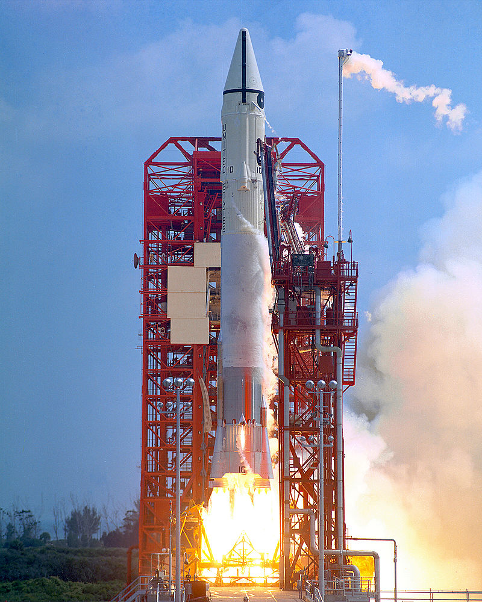

Cohetes espaciales.

Un cohete espacial, también llamado vector, lanzador, lanzadera, o vehículo de lanzamiento espacial, es un tipo de cohete diseñado y empleado específicamente para el trans porte de carga útil desde la superficie terrestre al espacio ext erior.
NASA.

La Administración Nacional de Aeronáutica y el Espacio, más conocida como NASA (por sus siglas en inglés, National Aeronautics and Space Administration), es la agencia d el gobierno estadounidense responsable del programa espacial ci vil, así como de la investigación aeronáutica y aeroespacial.
Tesla.
Tesla (anteriormente, Tesla Motors, Inc.) es una empresa estado unidense con sede en Austin, Texas, y liderada por Elon Musk, que diseña, fabrica y vende automóviles eléctricos, componentes para la propulsión de vehículos eléctricos, techos solares, instalaciones solares fotovoltaicas y baterías domésticas.